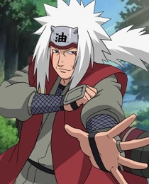
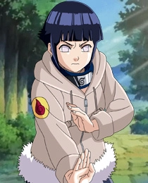
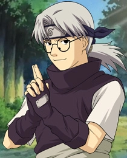
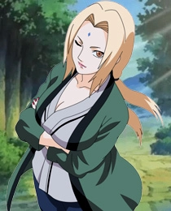
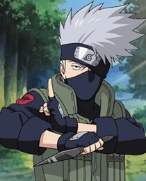
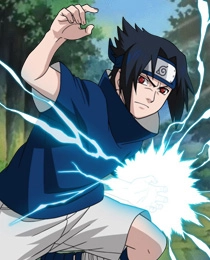

Джирая
Был одним из трех легендарных ниндзя вместе с Цунаде и Орочимару и учеником третьего Хокаге.

хината
Наследница клана Хьюга, единственная девушка, влюбленная в Наруто Узумаки

кабуто
Правая рука и шпион Орочимару.

цунаде
Одна из лучших ниндзя-медиков, ученица Третьего Хокаге.

Какаши
Один из самых сильных ниндзя Конохи, а также учитель и наставник команды № 7.
Наруто
Главный герой истории, подросток-ниндзя, в теле которого его отец, жертвуя своей жизнью, заточил огромного Девятихвостого Демона-Лиса,

Саске
Один из главных персонажей, гений сильнейшего, но уничтоженного клана Учиха его же братом.
Сакура
Одна из учениц академии, по уши влюбленная в Саске